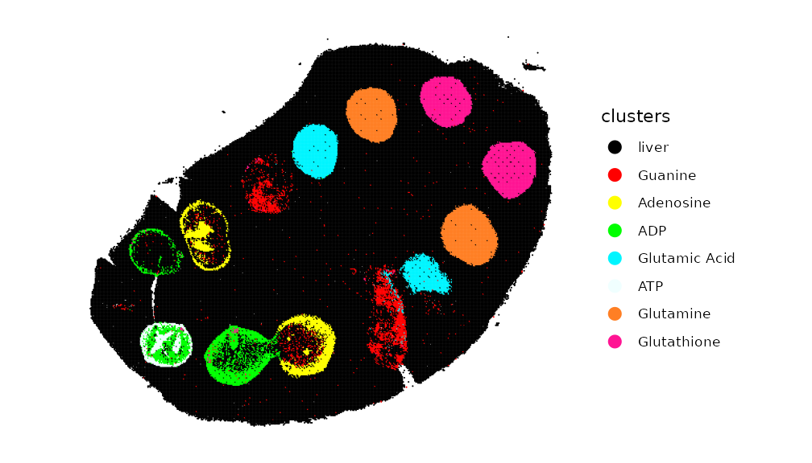
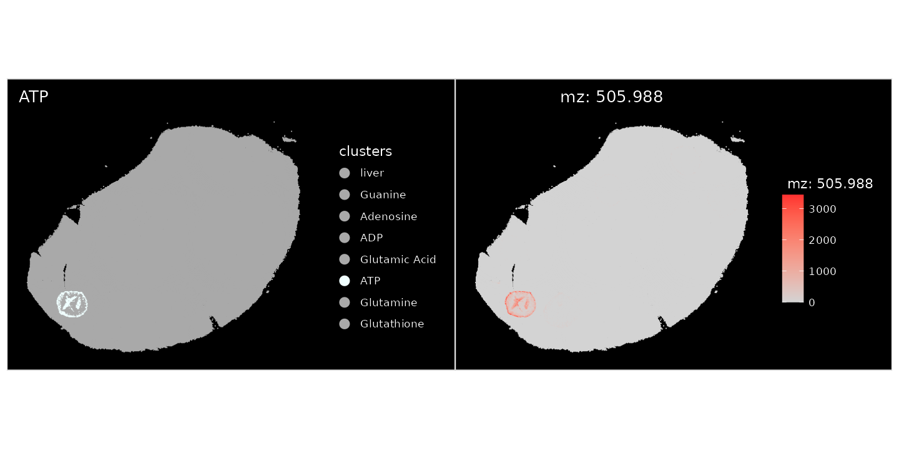
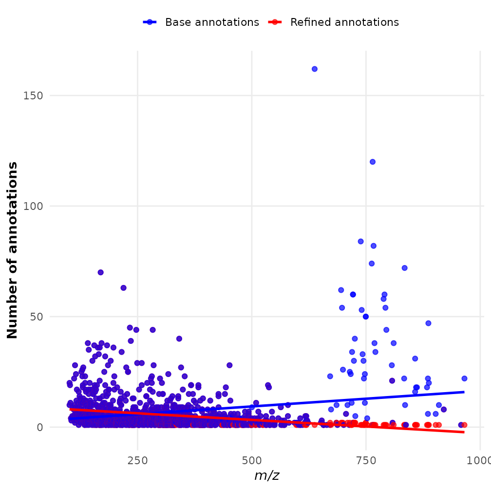

SpaMTP: Refining Metabolite Annotations
Source:vignettes/Annotation_Refinement.Rmd
Annotation_Refinement.RmdRefining m/z Metabolite Annotations with SpaMTP
This tutorial highlights complementary ways to prioritise multiple candidate metabolites assigned to the same observed m/z. The first two approaches are implemented directly in SpaMTP. A custom matrix-adduct search can then extend the candidate space for known acquisition chemistry. Pseudo-MS/MS and paired targeted metabolomics provide additional independent evidence:
- Pathway-based prioritisation with
CalculateAnnotationStatistics - Lipid nomenclature simplification with
RefineLipids - Custom matrix-adduct design and single-peak candidate comparison
- Pseudo-MS/MS evidence from an independent MS1-ID/GNPS spectral database
- Comparison with paired targeted metabolomics data
These approaches provide complementary evidence. They should prioritise or support accurate-mass candidates rather than silently replace the original annotations.
Author: Andrew Causer
Install and Import R Libraries
First we need to import the required libraries for this analysis.
## Install SpaMTP if not previously installed
if (!require("SpaMTP"))
devtools::install_github("GenomicsMachineLearning/SpaMTP")
#General Libraries
library(SpaMTP)
library(Cardinal)
library(Seurat)
library(dplyr)
library(tidyr)
#For plotting + DE plots
library(ggplot2)
library(EnhancedVolcano)
library(viridis)1) Pathway-Based Refinement:
CalculateAnnotationStatistics
This function uses correlations in pathway expression (Metabolite only, Gene only or Multi Omic based pathway information) to refine metabolite annotation. Specifically, for each annotated metabolite, the expression profiles for all known pathways associated with this metabolite are calculated. Based on spatial colocalisation between relative pathways and the given m/z mass, each metabolite is then ranked based on Pearson correlation values and the number of significant pathways associated with that metabolite.
Below we will use a public mouse liver dataset with spotted chemicals standards to demonstrate this:
spotted_file <- resolve_spamtp_vignette_file(
article = "Annotation_Refinement",
filename = "spotted_Annotated_H_Cl_Adducts.RDS",
url = "https://zenodo.org/api/records/17289187/files/spotted_Annotated_H_Cl_Adducts.RDS/content",
expected_md5 = "d7b46c8d71b7a3eb95a01a210e010c40"
)
spotted <- readRDS(spotted_file)
spotted## An object of class Seurat
## 1303 features across 109390 samples within 1 assay
## Active assay: Spatial (1303 features, 0 variable features)
## 1 layer present: counts
## 1 spatial field of view present: fovHere we have a SpaMTP Seurat object that is already processed, with m/z annotated. Meaning we have 1303 annotated m/z values. This dataset includes certain chemical compounds which were ‘spiked-in’ at known locations. We will plot these below:
metabolite_colors <- list("ATP" = "azure","ADP" = "green","Adenosine" = "yellow", "Guanine" = "red","Glutamic Acid" = "turquoise1", "Glutamine" = "chocolate1","Glutathione" = "deeppink","liver" = "black")
ImageDimPlot(spotted, group.by = "clusters", cols = metabolite_colors, dark.background = F)
The plot highlights the location of each known metabolite. However,
due to the inherent issue of mass spectrometry imaging data one m/z mass
may be associated with multiple possible metabolites. For example
adenosine triphosphate or ATP was spiked-in to the second set
of wells within the liver (green). When we look at the annotation of
ATP, we can see for m/z-505.988470137 there are 4 different
annotations, one of which is ATP.
SearchAnnotations(spotted, metabolite = "Adenosine triphosphate", search.exact = T)| raw_mz | mz_names | observed_mz | all_IsomerNames | all_Isomers | all_Isomers_IDs | all_Adducts | all_Formulas | all_Errors | |
|---|---|---|---|---|---|---|---|---|---|
| 1162 | 505.9885 | mz-505.988470137 | 505.9885 | Adenosine triphosphate; dGTP; 2-hydroxy-dATP; [[(2R,5R)-5-(6-Aminopurin-9-yl)-3,4-dihydroxyoxolan-2-yl]methoxy-hydroxyphosphoryl] phosphono hydrogen phosphate | HMDB0000538; HMDB0001440; HMDB0059593; HMDB0257997 | hmdb:HMDB0000538; hmdb:HMDB0001440; hmdb:HMDB0059593; hmdb:HMDB0257997 | M-H | C10H16N5O13P3 | 0.0019 |
Plotting this m/z value spatially, it localises completely within the ATP spiked-in region.
ImageDimPlot(spotted, group.by = "clusters", cols = setNames(
ifelse(names(metabolite_colors) == "ATP", "azure", "darkgrey"),names(metabolite_colors)
))+ ggtitle("ATP")| ImageMZPlot(spotted, mzs = 505.9885)
This confirms that the correct annotation of
mz-505.988470137 is only ‘ATP’. This is the case with all
other spiked-in chemicals. To refine the annotations based on pathway
correlation we can run SpaMTP’s
CalculateAnnotationStatistics:
## Step 1: Create a pathway assay - This can be done using only metabolites, or can be merged to include genes if applicable
spotted <- CreatePathwayAssay(spotted, analyte_type = "metabolites", assay = "Spatial", new_assay = "SPM_pathway", verbose = T)
## Step 2: Format Pathway Assay
DefaultAssay(spotted) <- "SPM_pathway"
spotted <- NormalizeData(spotted)
spotted <- ScaleData(spotted)
## Step 3: Run CalculateAnnotationStatistics
output <- CalculateAnnotationStatistics(data = spotted, mz.assay = "Spatial",pathway.assay="SPM_pathway", mz.slot = "counts", return.top = TRUE)After running CalculateAnnotationStatistics the output
will be a dataframe containing the most likely annotation for each m/z
value based on correlations with pathway expression. Lets subset this
output to look at our spiked-in metabolites:
output[c(1162,1053,501,626,126,117,251,113,248,637,638,835,836),]| raw_mz | mz_names | metabolite | n_sig_path | max_cor | z_score | pval | pval_adj | original_annotations | |
|---|---|---|---|---|---|---|---|---|---|
| 1162 | 505.9885 | mz-505.988470137 | Adenosine triphosphate | 2381 | 0.8374779 | 1.731981 | 0.0416385 | 0.1249154 | Adenosine triphosphate; dGTP; 2-hydroxy-dATP; [[(2R,5R)-5-(6-Aminopurin-9-yl)-3,4-dihydroxyoxolan-2-yl]methoxy-hydroxyphosphoryl] phosphono hydrogen phosphate |
| 1053 | 426.0221 | mz-426.022139245 | ADP | 3579 | 0.8985871 | 2.541858 | 0.0055132 | 0.0275662 | Adenosine 3’,5’-diphosphate; dGDP; ADP; [(2S,3R,4R,5R)-5-(6-Aminopurin-9-yl)-3,4-dihydroxyoxolan-2-yl]methyl phosphono hydrogen phosphate; Zidovudine diphosphate |
| 501 | 266.0895 | mz-266.089477461 | Adenosine | 104 | 0.9071216 | 3.756311 | 0.0000862 | 0.0006897 | 3’-Azido-3’-deoxythymidine, 98%; 8-Oxo-2’-deoxyadenosine; Adenosine; Deoxyguanosine; Vidarabine; Zidovudine; 9-Arabinofuranosyladenine; Formycin A |
| 626 | 302.0662 | mz-302.066155193 | Adenosine | 104 | 0.8019030 | 4.117214 | 0.0000192 | 0.0001726 | Hpmpa; 3’-Azido-3’-deoxythymidine, 98%; 8-Oxo-2’-deoxyadenosine; Adenosine; Deoxyguanosine; Vidarabine; Zidovudine; 9-Arabinofuranosyladenine; Formycin A |
| 126 | 150.0421 | mz-150.042133345 | Guanine | 42 | 0.6453926 | 3.000000 | 0.0013499 | 0.0053996 | 8-Oxo-7,8-dihydrodeoxyguanine; Guanine; 2-Hydroxyadenine; 8-Hydroxyadenine |
| 117 | 146.0459 | mz-146.045881333 | L-Glutamic acid | 373 | 0.8193504 | 4.792862 | 0.0000008 | 0.0000099 | N-lactoyl-Glycine; 5-Hydroxy-4-oxo-L-norvaline; Alanine acetate; N-Methyl-DL-aspartic acid; L-Glutamic acid; N-Methyl-D-aspartic acid; N-Acetylserine; O-Acetylserine; D-Glutamic acid; L-4-Hydroxyglutamate semialdehyde; 3-(Carboxymethylamino)propanoic acid; DL-Glutamate |
| 251 | 182.0226 | mz-182.022559065 | L-Glutamic acid | 343 | 0.2866179 | 5.439546 | 0.0000000 | 0.0000004 | Fosmidomycin; 2-Amino-4-phosphonobutyric acid; N-lactoyl-Glycine; 5-Hydroxy-4-oxo-L-norvaline; Alanine acetate; N-Methyl-DL-aspartic acid; L-Glutamic acid; N-Methyl-D-aspartic acid; N-Acetylserine; O-Acetylserine; D-Glutamic acid; L-4-Hydroxyglutamate semialdehyde; 3-(Carboxymethylamino)propanoic acid; DL-Glutamate |
| 113 | 145.0619 | mz-145.061865745 | L-Glutamine | 137 | 0.5805269 | 4.103823 | 0.0000203 | 0.0001626 | Alanylglycine; Cyclic Urea; Glycyl-D-Alanine; Glycylsarcosine; D-Alanyl glycine; L-Glutamine; Ureidoisobutyric acid; D-Glutamine; 3-ureido-isobutyrate |
| 248 | 181.0385 | mz-181.038543477 | L-Glutamine | 137 | 0.5005050 | 4.126675 | 0.0000184 | 0.0001472 | Alanylglycine; Cyclic Urea; Glycyl-D-Alanine; Glycylsarcosine; D-Alanyl glycine; L-Glutamine; Ureidoisobutyric acid; D-Glutamine; 3-ureido-isobutyrate |
| 637 | 306.0765 | mz-306.076529999 | Glutathione | 175 | 0.7969612 | 4.082483 | 0.0000223 | 0.0001337 | Glutathione; Glutathionate(1-); Methyl 2-((3,4-dihydro-3,4-dioxo-1-naphthalenyl)amino)benzoate; Hallacridone; Aristolodione; zaprinast |
| 638 | 306.0772 | mz-306.077181461 | Glutathione | 175 | 0.7969960 | 4.082483 | 0.0000223 | 0.0001337 | Glutathione; Glutathionate(1-); Methyl 2-((3,4-dihydro-3,4-dioxo-1-naphthalenyl)amino)benzoate; Hallacridone; Aristolodione; zaprinast |
| 835 | 342.0532 | mz-342.053207731 | Glutathione | 175 | 0.5391956 | 4.082483 | 0.0000223 | 0.0001337 | O-Desmethylindomethacin; Glutathione; Glutathionate(1-); Methyl 2-((3,4-dihydro-3,4-dioxo-1-naphthalenyl)amino)benzoate; Hallacridone; Aristolodione |
| 836 | 342.0539 | mz-342.053859193 | Glutathione | 175 | 0.5441561 | 4.082483 | 0.0000223 | 0.0001337 | O-Desmethylindomethacin; Glutathione; Glutathionate(1-); Methyl 2-((3,4-dihydro-3,4-dioxo-1-naphthalenyl)amino)benzoate; Hallacridone; Aristolodione |
We can see for each spiked-in metabolite the predicted metabolite
with the highest significance in each case corresponded to the spike-in.
This method gives the user higher confidence that the annotations of m/z
value are correct and biologically significant. Note: For large datasets
this function can take a while to run, the function
CalculateSingleAnnotationStatistics can be used instead to
calculate refined annotations for a single m/z value. Please visit the
documentation
for more information.
2) Lipid Nomenchlature Refinement
As described previously in the Spatial Metabolomics Analysis
tutorial, because many different kinds of lipids can share the same
molecular weight, this may results in some m/z values possessing many
possible annotations. The SpaMTP function RefineLipids can
be used to simplify the lipid nomenclature into common lipid categories
and classes, giving more simplified annotations to a level that most SM
datasets are capable of identifying.
### Runs lipid nomenclature simplification on annotations
refined_lipid_annotations <- RefineLipids(spotted@assays$Spatial@meta.data, annotation.column = "all_IsomerNames", lipid_info = "simple")We can count the number of metabolites assigned for each m/z before and after refining the lipid annotations.
## Count original number of annotations per m/z
refined_lipid_annotations <- refined_lipid_annotations %>%
mutate(base_count = sapply(strsplit(all_IsomerNames, ";\\s*"), length))
## Count number of annotations per m/z following lipid simplification
refined_lipid_annotations <- refined_lipid_annotations %>%
mutate(
refined_count = ifelse(
is.na(Lipid.Maps.Category),
base_count,
sapply(strsplit(Lipid.Maps.Category, ";\\s*"), length)
)
)The maximum reduction in annotations was from 161 to 1. This is quite a significant simplification which can help in processing large datasets. Lets visualise the difference between each m/z value below:
# reshape to long format
df_long <- refined_lipid_annotations %>%
select(raw_mz, refined_count, base_count) %>%
pivot_longer(cols = c(refined_count, base_count),
names_to = "Type", values_to = "Count")
# plot
ggplot(df_long, aes(x = raw_mz, y = Count, color = Type)) +
geom_point(size = 2, alpha = 0.7) +
geom_smooth(method = "lm", se = FALSE, size = 1.2) +
scale_color_manual(values = c("refined_count" = "red",
"base_count" = "blue"),
labels = c("Base annotations", "Refined annotations")) +
labs(
x = expression(italic("m/z")),
y = "Number of annotations",
color = ""
) +
theme_minimal(base_size = 14) +
theme(
legend.position = "top",
panel.grid.minor = element_blank(),
axis.title = element_text(face = "bold")
)
We can see the larger m/z values, which correspond mostly to lipids, display the biggest differences following annotation refinement.
3) Single-Peak Comparison: Custom Matrix-Adduct Design
The standard adduct search space is appropriate only when its
ion-formation rules reflect the experiment. Reactive matrices such as
FMP-10 change the analyte before ion detection. The original FMP-10
workflow represented these matrix-derived products in the annotation
Adduct field, which is a useful computational abstraction
even though FMP-10 derivatization is a covalent reaction followed by
possible gas-phase chemistry, rather than a conventional non-covalent
adduct.
[M+2FMP10a]+ has a 521.202 Da shift and one charge
The mass of the purchased reagent must not be added directly to the
analyte. FMP-10 is supplied as the iodide salt, C20H15FIN,
with an average molar mass of approximately 415.25 g/mol. The iodide is
a counter-ion and is not retained in the detected dopamine derivative.
Even the active FMP-10 cation, C20H15FN+ (approximately
288.12 Da), is not the net tag mass: during nucleophilic aromatic
substitution, fluorine leaves from FMP-10 and a hydrogen is lost from
the reacting analyte group.
The mass bookkeeping for product I (2FMP10a) is
therefore:
| Stage | Composition used for the mass change | Approximate monoisotopic change | Charge interpretation |
|---|---|---|---|
| Purchased FMP-10 iodide salt | C20H15FIN |
Not used as an adduct shift | Salt contains a cation and iodide counter-ion. |
| One covalently retained tag | C20H15FN - F - H = C20H14N |
268.11262 Da | One pyridinium charge is introduced. |
| Two retained tags | 2(C20H14N) = C40H28N2 |
536.22525 Da | The initial double derivative contains two permanent charges. |
| MALDI product I | C40H28N2 - CH3 = C39H25N2 |
521.202 Da (reported, rounded) | Gas-phase demethylation/charge neutralisation gives the observed singly charged ion. |
Thus, 2FMP10 describes two derivatization
events, whereas the suffix a identifies one final
ion product from those events. It does not mean
2 * 288.12 Da, and z = +1 describes the final
ion reaching the detector, not the charge of the transient double
derivative. A second reported product, 2FMP10b, follows an
alternative dehydrogenation route and has a different net shift
(approximately 535.218 Da). The original study establishes the FMP-10
covalent charge-tagging chemistry and the dopamine signal near
m/z 674.28; the subsequent reaction study explicitly
describes the singly charged demethylated and dehydrogenated double
derivatives (original FMP-10
study; reaction-product
study).
For transparent computation, the rule below derives the product-I
shift from monoisotopic elemental masses. Following the mass-shift
convention used in the reaction study, the elemental composition change
and the final charge are stored separately. C39H25N2 gives
521.20177 Da, which is reported as 521.202 Da after rounding.
fmp10_element_mass <- c(
C = 12,
H = 1.00782503223,
N = 14.00307400443
)
# Each substitution retains C20H14N from the active FMP-10 cation.
fmp10_retained_tag_mass <-
20 * fmp10_element_mass[["C"]] +
14 * fmp10_element_mass[["H"]] +
fmp10_element_mass[["N"]]
# Product I: two retained tags, followed by loss of CH3.
# The final +1 charge is recorded separately in the rule table below.
fmp10_double_a_shift <-
2 * fmp10_retained_tag_mass -
(fmp10_element_mass[["C"]] + 3 * fmp10_element_mass[["H"]])
fmp10_mass_accounting <- data.frame(
quantity = c(
"One retained FMP-10 tag",
"Two retained tags before demethylation",
"Final 2FMP10a shift used by SpaMTP"
),
monoisotopic_mass_Da = c(
fmp10_retained_tag_mass,
2 * fmp10_retained_tag_mass,
fmp10_double_a_shift
)
)
knitr::kable(fmp10_mass_accounting, digits = 7, row.names = FALSE)| quantity | monoisotopic_mass_Da |
|---|---|
| One retained FMP-10 tag | 268.1126 |
| Two retained tags before demethylation | 536.2252 |
| Final 2FMP10a shift used by SpaMTP | 521.2018 |
This exact mass is a candidate-generation rule, not proof that a peak is dopamine. Its credibility comes from restricting the search space with known experimental chemistry. A defensible FMP-10 search should proceed in the following order:
- Search all RaMP compounds with the ordinary positive-mode adduct rules.
- Add FMP-10 product rules only when the sample was actually prepared with FMP-10.
- Require enough compatible reaction sites for each rule. For
2FMP10a, the candidate should have at least two validated FMP-10-reactive sites (phenolic hydroxyl and/or primary or secondary amine sites). Dopamine satisfies this requirement. - Compare the calculated product m/z with the observed m/z under the chosen ppm tolerance, while retaining all mass-compatible alternatives.
- Award additional confidence for independent evidence such as the expected FMP-10 product family, deuterated-FMP-10 shifts, isotope patterns, spatial co-localisation, pseudo-MS/MS, or an authentic standard.
If reactive-site counts cannot be obtained from a structure, SpaMTP should retain the mass match as an exploratory candidate but mark the chemistry as unverified and lower its prior. In other words, expanding the search space earns evidential credit only when the acquisition matrix, reaction-site eligibility, exact mass, and final charge are all recorded; merely adding a large arbitrary mass shift does not.
This distinction matters for candidate generation. For example, the
FMP-10 mouse-brain demonstration contains an observed peak at
m/z 674.2805, assigned to double-derivatised dopamine,
[M+2FMP10a]+. Dopamine has a neutral monoisotopic mass of
approximately 153.07898 Da. None of the standard positive adduct rules
place dopamine near the observed peak:
dopamine_peak_mz <- 674.2805
dopamine_db <- chem_props[
toupper(chem_props$chem_source_id) == "HMDB:HMDB0000073",
c(
"ramp_id", "chem_source_id", "inchi_key", "monoisotop_mass",
"common_name", "mol_formula"
),
drop = FALSE
]
dopamine_db <- dopamine_db[1L, , drop = FALSE]
stopifnot(nrow(dopamine_db) == 1L)
# Dopamine has two phenolic hydroxyls and one primary amine. This explicit
# structure-derived field lets matrix-reaction rules prune impossible products.
dopamine_db$fmp10_reactive_sites <- 3L
standard_positive_rules <- AdductRules("positive")
standard_dopamine_index <- BuildMZAnnotationIndex(
dopamine_db,
polarity = "positive",
rules = standard_positive_rules
)
standard_dopamine_hits <- QueryMZAnnotationIndex(
dopamine_peak_mz,
standard_dopamine_index,
ppm = 5
)
data.frame(
observed_mz = dopamine_peak_mz,
search_space = "Standard positive adducts",
dopamine_matches = nrow(standard_dopamine_hits)
) |>
knitr::kable(digits = 7, row.names = FALSE)| observed_mz | search_space | dopamine_matches |
|---|---|---|
| 674.2805 | Standard positive adducts | 0 |
FMP-10 chemistry provides the missing information. Double
derivatization can produce different singly charged products with
reported net shifts of approximately 521.202 and 535.218 Da. These are
distinct reaction-product rules; they should not be generated by blindly
multiplying either the salt, active-cation, or single-tag mass. SpaMTP
selects the appropriate product rules from the declared matrix profile.
The user does not need to supply adducts; that argument is
only needed to restrict the automatic search space. The matrix profile
extends the standard rules without changing the RaMP compound
database:
fmp10_rules <- MALDIMatrixRules(
maldi_matrix = "FMP-10",
polarity = "positive"
)
fmp10_product_rules <- fmp10_rules[
fmp10_rules$rule_class == "reactive_product",
c(
"name", "mass_shift", "charge", "reactive_group",
"min_reactive_sites", "rule_source"
),
drop = FALSE
]
stopifnot(
isTRUE(all.equal(
fmp10_product_rules$mass_shift[
fmp10_product_rules$name == "M+2FMP10a"
],
fmp10_double_a_shift,
tolerance = 1e-10
))
)
knitr::kable(fmp10_product_rules, digits = 7, row.names = FALSE)| name | mass_shift | charge | reactive_group | min_reactive_sites | rule_source |
|---|---|---|---|---|---|
| M+FMP10 | 268.1126 | 1 | FMP-10-reactive site | 1 | 10.1038/s41592-019-0551-3; 10.1002/cmtd.202500062 |
| M+2FMP10a | 521.2018 | 1 | FMP-10-reactive site | 2 | 10.1038/s41592-019-0551-3; 10.1002/cmtd.202500062 |
| M+2FMP10b | 535.2180 | 1 | FMP-10-reactive site | 2 | 10.1038/s41592-019-0551-3; 10.1002/cmtd.202500062 |
# `adducts` is intentionally omitted: use every rule selected by FMP-10.
fmp10_dopamine_index <- BuildMZAnnotationIndex(
dopamine_db,
polarity = "positive",
maldi_matrix = "FMP-10"
)
fmp10_dopamine_hits <- QueryMZAnnotationIndex(
dopamine_peak_mz,
fmp10_dopamine_index,
ppm = 5
)
knitr::kable(
fmp10_dopamine_hits[, c(
"observed_mz", "expected_mz", "ppm_error", "adduct", "neutral_mass",
"metabolite_names", "ramp_ids", "reactive_site_status", "score"
)],
digits = 7,
row.names = FALSE
)| observed_mz | expected_mz | ppm_error | adduct | neutral_mass | metabolite_names | ramp_ids | reactive_site_status | score |
|---|---|---|---|---|---|---|---|---|
| 674.2805 | 674.2808 | 0.3743479 | M+2FMP10a | 153.079 | Dopamine | RAMP_C_000218860 | verified | 0.7313182 |
Here mass_shift and charge describe the
net detected ion. The generic rule fields enforce the
final charge balance expected by the annotation engine; they do not
claim that no hydrogen was lost during the two substitution reactions.
Those reaction-site hydrogen losses, the intermediate +2
state, and the subsequent -CH3 transformation are already
folded into the product rule. Because
fmp10_reactive_sites = 3 was provided, the double
derivative is reported as verified for reaction-site
eligibility. If this structure-derived value is unavailable, SpaMTP
retains the candidate as unknown but applies a 0.25 score
multiplier instead of silently treating its chemistry as verified.
The custom rule recovers dopamine at an expected m/z of approximately
674.28075, within 1 ppm of the observed peak. This is a targeted
comparison of the dopamine hypothesis: it does not imply that no other
RaMP compound could match m/z 674.2805 through a standard
or custom rule. A full untargeted analysis must query the complete RaMP
index and report the competing candidates rather than search dopamine
alone.
The rule table is deliberately separate from chem_props.
A reusable custom rule should record the reactive matrix, net mass
shift, charge, product variant, polarity, source publication, and a
calibrated prior. Apply it only to experiments using the corresponding
chemistry. FMP-10 also supports single and other multiple-derivatization
products, so each validated reaction product requires its own rule. The
FMP-10 reaction and its use for neurotransmitter MSI are described in
the original
study; the alternative double-derivatization mass shifts are
detailed in a later reaction study.
This example illustrates the different roles of the evidence layers:
| Evidence layer | Interpretation for m/z 674.2805
|
|---|---|
| Standard adduct search | Dopamine is outside the standard positive-mode search space. |
| Custom FMP-10 rule | The known matrix chemistry makes double-derivatised dopamine a mass-compatible candidate. |
| Pseudo-MS/MS | An independent spectral match can support or challenge that candidate, but should not be fabricated from the adduct rule. |
The existing curated-panel interface remains useful when reference
product masses were measured directly. For example,
AddFMP10Annotations(..., only.fmp.adduct = TRUE) applies
SpaMTP’s curated FMP-10 product table. The profile/rule approach above
is preferable when designing a transparent, extensible search space for
a new reactive matrix or product variant.
Automatic matrix profiles and optional adduct selection
The same API covers conventional and reactive MALDI preparation. In the usual case, the user supplies the experimental matrix and polarity but does not need to enumerate adducts:
annotated <- AnnotateSM(
object,
assay = "Spatial",
maldi_matrix = "DHB",
polarity = "positive",
ppm_error = 5
)
# Optional restriction for a targeted analysis; not a compulsory argument.
targeted <- AnnotateSM(
object,
assay = "Spatial",
maldi_matrix = "FMP-10",
polarity = "positive",
adducts = c("M+FMP10", "M+2FMP10a"),
ppm_error = 5
)MALDIMatrixProfiles() is the auditable registry. It
includes widely used conventional matrices, reactive matrices, and
common on-tissue derivatization reagents, together with the target
functional groups and automatic-rule status:
matrix_profiles <- MALDIMatrixProfiles()
knitr::kable(
matrix_profiles[, c(
"display_name", "category", "default_polarity", "target_groups",
"automatic_rules"
)],
row.names = FALSE
)| display_name | category | default_polarity | target_groups | automatic_rules |
|---|---|---|---|---|
| No specified MALDI matrix | unspecified | positive | none | standard |
| 2,5-Dihydroxybenzoic acid (DHB) | conventional_matrix | positive | none | validated_matrix_adduct |
| alpha-Cyano-4-hydroxycinnamic acid (CHCA) | conventional_matrix | positive | none | validated_matrix_adduct |
| 9-Aminoacridine (9-AA) | conventional_matrix | negative | none | standard |
| 1,5-Diaminonaphthalene (DAN) | conventional_matrix | negative | none | standard |
| Norharmane | conventional_matrix | both | none | standard |
| FMP-10 | reactive_matrix | positive | primary/secondary amine; phenolic hydroxyl | validated_reactive_product |
| FMP-8 | reactive_matrix | positive | primary/secondary amine; phenolic hydroxyl | profile_only |
| FMP-9 | reactive_matrix | positive | primary/secondary amine; phenolic hydroxyl | profile_only |
| 2,4-Diphenylpyrylium tetrafluoroborate (DPP-TFB) | reactive_matrix | positive | primary amine | profile_only |
| 2,4,6-Trimethylpyrylium tetrafluoroborate (TMP-TFB) | reactive_matrix | positive | primary amine | profile_only |
| N-Methylpyridinium boronic acid (N-MePyBA) | reactive_matrix | positive | catechol/1,2-diol | profile_only |
| 2,4-Dinitrophenylhydrazine (DNPH) | reactive_matrix | positive | aldehyde/ketone | profile_only |
| Coniferyl aldehyde (CA) | reactive_matrix | positive | primary amine | profile_only |
| 2,4-Dihydroxybenzaldehyde (DHBA) | reactive_matrix | positive | primary amine | profile_only |
| 2,5-Dihydroxyacetophenone (DHAP) | reactive_matrix | positive | primary amine | profile_only |
| Girard reagent T | otcd_reagent | positive | aldehyde/ketone | profile_only |
| Girard reagent P | otcd_reagent | positive | aldehyde/ketone | profile_only |
| 2-Picolylamine (2-PA) | otcd_reagent | positive | carboxylic acid | profile_only |
| N,N,N-Trimethyl-2-(piperazin-1-yl)ethanaminium (TMPA) | otcd_reagent | positive | carboxylic acid | profile_only |
| AMPP/HATU | otcd_reagent | positive | carboxylic acid; aldehyde | profile_only |
| TAHS | otcd_reagent | positive | catecholamine | profile_only |
The profiles deliberately distinguish ionisation behaviour from covalent reaction chemistry:
| Matrix/profile | Automatic behaviour |
|---|---|
| DHB | Uses the standard positive-ion space and adds validated
dehydrated-DHB matrix adducts such as [M+(DHB-H2O)+H]+.
Because DHB also produces abundant matrix clusters, an isolated mass
match receives a low prior and should be supported by its parent ion and
spatial correlation. |
| CHCA/HCCA | Uses the standard positive-ion space and adds the
reported major [M+CHCA+Na]+ matrix-adduct rule. It is
treated as a non-covalent matrix adduct, not a universal covalent
tag. |
| 9-AA | Defaults to negative mode and ordinary negative ions,
especially [M-H]-. No fixed M+9AA product is
generated because a universal 9-AA metabolite-product shift is not
established. |
| FMP-10 | Adds covalent single- and double-derivative products with reaction-site requirements and literature provenance. |
| Other registered reactive matrices/reagents | FMP-8/9, DPP-TFB, TMP-TFB, N-MePyBA, DNPH, coniferyl
aldehyde, DHBA, DHAP, Girard T/P, 2-picolylamine, TMPA, AMPP/HATU, and
TAHS are represented. A profile_only entry selects a
sensible polarity and standard ion space but does not invent a universal
product mass; a verified study-specific rule can be supplied
explicitly. |
For DHB and CHCA matrix adducts, providing ms1_spectrum
activates the existing adduct-family check. SpaMTP searches for the
corresponding base ion (for example [M+H]+ or
[M+Na]+) in the same spectrum and multiplies an unsupported
matrix-adduct candidate by 0.1. In MSI, the stronger validation is
per-pixel ion-image correlation between the parent and proposed
matrix-adduct feature; that spatial evidence should be stored alongside
the annotation when available.
4) Pseudo MS/MS-Based Refinement
Rationale
Full-scan MSI data do not contain isolated product-ion spectra. However, an intact ion, its alternative ion forms, and its in/post-source fragments can have similar spatial distributions. A precursor-specific pseudo-MS/MS spectrum can therefore be reconstructed by grouping m/z features with correlated ion images and comparing the resulting spectrum with a reference MS/MS library.
Importantly, the mean spectrum across all pixels is not a precursor-specific pseudo-MS/MS spectrum. Pooling every detected feature in this way can combine unrelated metabolites and inflate spectral matches. The workflow used here is based on the published MS1-ID method and its reference implementation:
- Detect and denoise m/z features from the imzML data.
- Remove features without sufficient spatial structure or pixel coverage.
- Calculate ion-image correlations and group co-localised features.
- Construct one pseudo-MS/MS spectrum for each retained target m/z.
- Search the spectra against unscaled and intensity-scaled GNPS libraries using precursor-tolerant reverse spectral matching.
- Retain the score, matched-peak count, spectral usage, InChIKey, library identifier, and all processing parameters as annotation evidence.
Reverse matching ignores additional unmatched peaks in the experimental pseudo-spectrum, which may originate from correlated background compounds. It does not make the reconstructed spectrum equivalent to experimentally acquired MS/MS, and it generally cannot distinguish structural isomers with similar fragmentation.
Keep RaMP and pseudo-MS/MS results independent
SpaMTP treats the two resources as separate annotation layers:
| Annotation layer | Primary question | Recommended storage |
|---|---|---|
| RaMP accurate-mass candidates | Which neutral compounds and adducts are compatible with the observed m/z? | The scored SpaMTP annotation table in
object@tools$mz_annotation
|
| MS1-ID/GNPS pseudo-MS/MS evidence | Which library structures are supported by spatially correlated ion forms and fragments? | A separate, versioned result table or RDS database |
The GNPS spectral library is therefore not bundled into the RaMP database and pseudo-MS/MS scores do not overwrite the RaMP mass, isotope, chemical-validity, or adduct-network scores. Keeping the results independent also allows either database to be updated without rebuilding the other. Candidate agreement can later be assessed using stable identifiers such as InChIKey; compound names alone should not be used for this comparison.
Generate the independent pseudo-MS/MS database
MS1-ID is an optional external Python workflow and is not installed
or executed automatically by SpaMTP. The input directory must contain
matching .imzML and .ibd files. The following
example uses both official GNPS library variants:
ms1_id msi \
--input_dir path/to/msi_data \
--libs db/gnps_minmz100.pkl db/gnps_minmz100_k10.pkl \
--mode positive \
--mz_ppm_tol 5 \
--min_feature_spatial_chaos 0.10 \
--min_pixel_overlap 50 \
--min_correlation 0.85 \
--lib_search_mztol 0.05 \
--score_cutoff 0.70 \
--min_matched_peak 3 \
--min_spec_usage 0.05 \
--n_cores 12These values are starting points, not universal confidence
boundaries. Mass accuracy, spatial resolution, the number of tissue
pixels, ionisation mode, and instrument type should guide parameter
selection. In particular, min_pixel_overlap must be reduced
cautiously for small datasets, and a lower score threshold increases
exploratory coverage at the cost of more false matches.
For each imzML file, MS1-ID writes
ms1_id_annotations_all.tsv and a dereplicated
ms1_id_annotations_derep.tsv. The complete table should be
retained because it preserves alternative spectral candidates; the
dereplicated table is convenient for inspection but should not be the
only archived result.
pseudo_msms_file <- file.path(
"path/to/msi_data",
"sample_name",
"ms1_id_annotations_all.tsv"
)
pseudo_msms_results <- read.delim(
pseudo_msms_file,
sep = "\t",
stringsAsFactors = FALSE,
check.names = FALSE
)
required_columns <- c(
"pms2_idx", "name", "mz", "spatial_chaos", "matched_score",
"matched_peak", "spectral_usage", "precursor_mz", "precursor_type",
"formula", "inchikey", "db_name", "db_id", "pseudo_ms2"
)
stopifnot(all(required_columns %in% colnames(pseudo_msms_results)))Thresholds can be changed by the user when analysing the retained table, provided that the original MS1-ID search was run with equally permissive or more permissive cut-offs:
pseudo_score_threshold <- 0.70
minimum_matched_peaks <- 3L
minimum_spectral_usage <- 0.05
selected_pseudo_msms <- pseudo_msms_results |>
dplyr::filter(
matched_score >= pseudo_score_threshold,
matched_peak >= minimum_matched_peaks,
spectral_usage >= minimum_spectral_usage
) |>
dplyr::arrange(mz, dplyr::desc(matched_score),
dplyr::desc(matched_peak))For the same dopamine peak, the pseudo-MS/MS table can be queried independently by observed precursor m/z and InChIKey. The first 14 InChIKey characters compare the two-dimensional molecular connectivity while avoiding an accidental name match:
dopamine_connectivity_key <- substr(
toupper(dopamine_db$inchi_key[[1]]),
1,
14
)
dopamine_pseudo_msms <- selected_pseudo_msms |>
dplyr::mutate(
observed_ppm_error = abs(mz - dopamine_peak_mz) /
dopamine_peak_mz * 1e6,
connectivity_key = substr(toupper(inchikey), 1, 14)
) |>
dplyr::filter(
observed_ppm_error <= 5,
connectivity_key == dopamine_connectivity_key
) |>
dplyr::arrange(
dplyr::desc(matched_score),
dplyr::desc(matched_peak)
)
dopamine_pseudo_msms[, c(
"mz", "name", "matched_score", "matched_peak", "spectral_usage",
"precursor_type", "inchikey", "db_name", "db_id"
)]An empty result means that the independent pseudo-MS/MS layer did not support dopamine under the selected thresholds; it must not erase the custom-adduct candidate. Conversely, a spectral match supports the proposed structure but does not validate the FMP-10 reaction rule by itself. Keeping both rows of evidence preserves that distinction.
The result and its provenance should be saved together as an independent database. Record the installed MS1-ID version, GNPS release or checksum, input file checksum, ionisation mode, and all thresholds used for the analysis.
pseudo_msms_database <- list(
metadata = list(
engine = "ms1_id",
engine_version = "record the installed version",
spectral_library = c(
"gnps_minmz100.pkl",
"gnps_minmz100_k10.pkl"
),
ion_mode = "positive",
mz_ppm_tolerance = 5,
minimum_spatial_correlation = 0.85,
generated_at = format(Sys.time(), "%Y-%m-%d %H:%M:%S %Z")
),
results = pseudo_msms_results
)
saveRDS(pseudo_msms_database, "sample_name_pseudo_msms_database.rds")Interpretation and validation
A pseudo-MS/MS match should be reported as supporting evidence for a candidate, not as proof of identity. At minimum, inspect the reverse-match score, number of matched peaks, spectral usage, spatial coherence of the matched ions, precursor/adduct agreement, and library provenance. Lack of a match is also not evidence that a RaMP candidate is absent: some metabolites generate few in-source fragments or are poorly represented in public libraries.
Whenever possible, calibrate the thresholds using authentic standards or spiked compounds measured on the same platform. Pixel-permuted ion images and decoy spectral libraries provide useful negative controls. Final reporting should distinguish accurate-mass candidates, pseudo-MS/MS-supported candidates, and identifications confirmed by authentic MS/MS or standards.